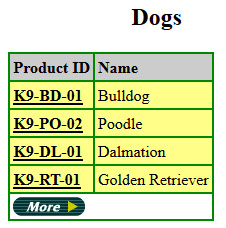
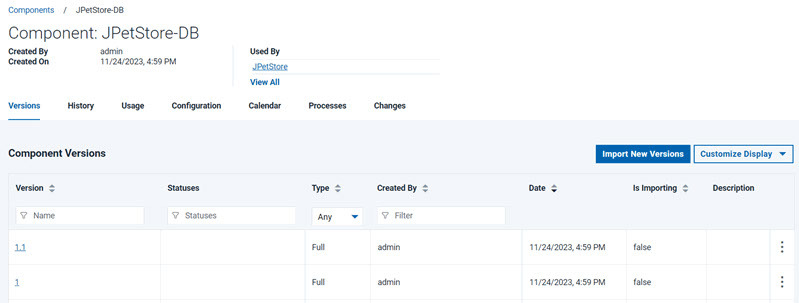
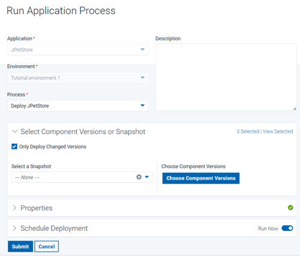
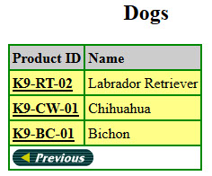
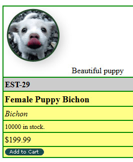

In the first lesson, you deleted certain versions of the
components. In this lesson, you add those versions again to simulate
deploying a new version of the components.
About this task
The web application that you deployed in the previous lesson included version 1 of the web
component and database component. Version 1.1 of these components includes a new item
for the online store: a Bichon in the Dogs category.
Procedure
- Verify that
Bichon is not available in
the Dogs category:
- Open the application by opening a web browser to the
following URL:
http://hostname:8081/JPetStoreDev
- Click Enter the Store.
- Browse the Dogs category and verify that
Bichon is
not available.The following figure shows some of the dogs
in this category:

- Import the new version of the database component:
- On the Deploy server,
click the Components tab and then click the
JPetStore-DB component.
- Click the Versions tab and then
click Import New Versions.
Now,
version 1.1 is shown in the list of versions, as shown in the following
figure:

- Click the new version of the database component to open
its information page.
- Click the Configuration tab.
- Under Basic Settings, in the Type list,
select Incremental and then click Save.
This version is set to be an incremental upgrade rather
than a new version. Full versions are installed directly, without
installing prior versions first. Incremental upgrades start with prior
versions, and then the new version is installed over the prior versions.
The new database version is only an addition to the database, so it
requires the prior version of the component.
- In the same way, import version 1.1 of the web component
without changing the Type setting.
The
application component does not have any additional versions.
- Click Applications and then click
the JPetStore application to get back to the list of environments.
- On the environment, run the application process again.
In the
Run Process window, be sure to select
the latest version for each of the components by clicking
Choose
Versions and then clicking .
Optionally, you can select the
Only Changed Versions check
box so that the server deploys only the components with new versions.
In this case, the server runs the component processes only for the
web and database components.

- In your web browser, reload the web application and explore
the Dogs category to see the new
Bichon, as shown
in the following figure:
This new item demonstrates
that the database component is updated to version 1.1
- Click the Product ID for
Bichon and then
the Item ID to see the product page for Bichon.
The new graphic for this item demonstrates that the web component
is updated to version 1.1.

Results
Now the application includes the new versions of the components.
In a production scenario, new versions of components
might become available frequently. You can run the application process
as often as necessary to update the deployed components. You can also
configure the application process to run automatically when new versions
of the components are available.
Now that you have completed this
tutorial, you can continue learning about how to deploy components
by using snapshots. See the tutorial Creating and deploying snapshots.